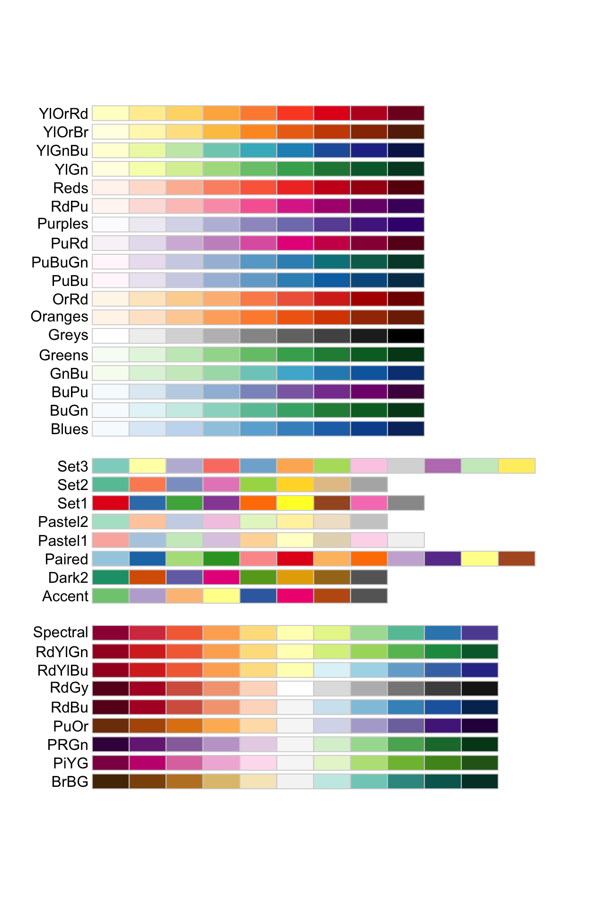

Ce tutoriel vous permettra de vous entraîner à réaliser des cartes de chaleur.
Carte des Vitamines
Tout d’abord, concentrons nous sur un petit sous-ensemble de variables : les vitamines contenues dans les fruits.
J’ai créé pour vous une table vitafruits à l’aide de la commande suivante. Prenez quelques instants pour décortiquer cette commande et comprendre comment elle fonctionne. Comprenez vous le rôle de la fonction grep ?
vitafruits <- fruits[, grep("Vitamine", colnames(fruits))]Maintenant, utilisez la fonction pheatmap du package
pheatmap pour faire une carte de chaleur de la table
vitafruits.
library(pheatmap)
pheatmap(vitafruits)Dendrogrammes
La carte de chaleur en elle-même consiste en une image rectangulaire composée de cellules colorées en fonction d’une échelle de couleur représentée sur la droite. Cette échelle est très souvent une échelle allant du bleu ou du blanc pour les petites valeurs à du rouge pour les grandes valeurs. La carte est agrémentée sur le côté et en haut de deux figures en forme d’arbre appelées dendrogrammes. Elles sont le résultat d’une méthode dite de classification ascendante hiérarchique (CAH) qui regroupe les lignes et/ou les colonnes en fonction de leur similarité. Nous en verrons plus sur la CAH dans la suite du cours.
Enlevez les dendrogrammes avec les arguments
cluster_rows et cluster_rows.
pheatmap(vitafruits, cluster_rows = FALSE, cluster_cols = FALSE)Standardisation
Pour représenter des variables ou des individus très différents, il
est important de pouvoir transformer les données pour les placer dans un
référentiel similaire. C’est tout l’intérêt de l’argument
scale, dont la valeur est none par défaut,
c’est-à-dire qu’aucune transformation n’est appliquée.
Modifiez l’argument scale de la commande suivante et
observez le résultat. N’oubliez pas que vous pouvez soit regarder l’aide
de la fonction pour avoir plus de détails sur cet argument
(?scale), soit vous servir de la complétion automatique
!
pheatmap(vitafruits, cluster_rows = FALSE,
cluster_cols = FALSE, show_rownames = FALSE,
border_color = "black", cellwidth = 15,
scale = "column")Couleurs
Comme R est très utilisé pour réaliser des représentations
graphiques, il existe énormément de façon de travailler les couleurs des
graphes. Nous allons voir une façon de modifier les
couleurs d’un carte de chaleur, en travaillant sur sa palette, avec
l’excellent package RColorBrewer.
Attention, le package
RColorBrewerest adapté à des palettes pour lesquels on sera capable de très bien distinguer deux couleurs différentes, c’est pour cela qu’on doit combiner ses fonctions avec la fonction d’interpolationcolorRampPalette.
J’ai utilisé ci-dessous la commande display.brewer.all
qui permet de représenter toutes les palettes de couleurs disponibles
dans RColorBrewer.
library(RColorBrewer)
display.brewer.all()
Il y en a trois types :
- les palettes “séquentielles” (en haut) qui sont adaptées à des échelles de valeurs allant d’un minimum (associée à un ton clair) à un maximum (associé à un ton foncé),
- les palettes “qualitatives” (au milieu) qui contiennent des couleurs toutes facilement différentiables les unes des autres,
- les palettes “divergentes” (en bas) qui sont adaptées à la représentation d’échelles de valeurs qui vont d’un minimum (foncé) à un maximum (foncé) en passant par une valeur intermédiaire (claire).
Nous allons transformer la palette séquentielle YlOrRd
(qui va donc du jaune au rouge) qui contient seulement 9 couleurs en une
palette contenant 50 couleurs grâce à la fonction
colorRampPalette.
Testez le code ci-dessous qui générera la nouvelle palette.
mycolz <- brewer.pal(9, "YlOrRd")
colzRamp <- colorRampPalette(mycolz)(50)
barplot(rep(1, 50), col = colzRamp, border = NA, axes = F)Complétez le code suivant pour utiliser cette nouvelle palette sur
les données vitafruits !
mycolz <- brewer.pal(9, "YlOrRd")
colzRamp <- colorRampPalette(mycolz)(50)
pheatmap(vitafruits)pheatmap(vitafruits, cluster_rows = FALSE,
cluster_cols = FALSE, show_rownames = FALSE,
border_color = "black", cellwidth = 15,
scale = "column", color = colzRamp)Ajouter des informations
La carte de chaleur permet de représenter des données quantitatives, mais très souvent, nous avons en plus de ces données des données qualitatives qui décrivent les lignes ou les colonnes de nos données !
Nous allons nous entraîner sur un cas très simple : représenter si l’aliment à base de fruits qui est représenté dans la table est cru ou non.
Pour cela, j’ai créé une table annexe qui a les mêmes noms de lignes
que la table vitafruits et qui contient une colonne
crue qui contient les valeurs oui ou
non. Prenez quelques minutes pour lire et comprendre ce
code.
cru <- ifelse(grepl("cru", fruits$groupe), "oui", "non")
annotFruit <- data.frame(
cru = cru,
row.names = rownames(vitafruits))La fonction pheatmap va ensuite prendre comme argument
cette table et ajouter l’information sous forme d’une ou plusieurs
lignes de couleurs, avec une légende supplémentaire. Modifiez la
commande suivante pour faire un joli graphe !
pheatmap(vitafruits, annotation_row = annotFruit)mycolz <- RColorBrewer::brewer.pal(9, "YlOrRd")
colzRamp <- colorRampPalette(mycolz)(50)
pheatmap(vitafruits, cluster_rows = TRUE,
cluster_cols = FALSE, show_rownames = FALSE,
cellwidth = 10, border_color = "black",
scale = "column", color = colzRamp,
annotation_row = annotFruit)Classification ascendante hiérarchique
Changez la méthode réalisant la classification ascendante hiérarchique (des lignes) en modifiant la valeur des arguments :
clustering_distance_rows: à choisir parmi"euclidean","correlation","maximum","manhattan","canberra“,"binary"ou"minkowski".clustering_method: à choisir parmi"ward.D","ward.D2","single","complete","average","mcquitty","median"ou"centroid".
pheatmap(vitafruits,
cluster_rows = TRUE,
cluster_cols = FALSE,
show_rownames = FALSE,
cellwidth = 10,
border_color = "black",
scale = "column")pheatmap(vitafruits, cluster_rows = TRUE,
cluster_cols = FALSE, show_rownames = FALSE,
cellwidth = 10, border_color = "black",
scale = "column",
clustering_distance_rows = "correlation",
clustering_method = "ward.D2")Bonus : corrplot
La librairie pheatmap n’est pas la seule à pouvoir
produire de jolies cartes de chaleur. La fonction corrplot
du package éponyme (pour utiliser cette fonction il faudra donc
installer préalablement le package corrplot).
Voici un exemple dans lequel j’ai changé quelques paramètres pour
rendre le graphe joli. Modifiez ces paramètres, tout en prenant bien
soin d’aller consulter l’aide de la fonction ?corrplot pour
comprendre leur signification.
cormat <- cor(fruits[, -(1:2)], use = "pairwise.complete.obs")
corrplot(corr = cormat, method = "square", type = "upper", diag = FALSE, , order = "hclust", tl.col = "black")